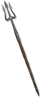

Heyday

Rock Piercer
Stygian Pike
Damage: 29-144 (two-handed)
Required Level: 76
+40-60% to Magic Skill Damage
+320% Enhanced Weapon Damage
+3-8 to Fend (class only)
+5-7 to Impale (class only)
+30-70% Chance of Open Wounds
+3 to Javelin and Spear Skills
+30% to All Resistances
+200-400 Defense vs. Missile
Unique Spear
Rock Piercer
- Type
- Spear
- Base
- Stygian Pike
- Tier
- Elite
- Required level
- 76
- Item level
- 60
- Required strength
- 168
- Required dexterity
- 97
- Max sockets
- 4